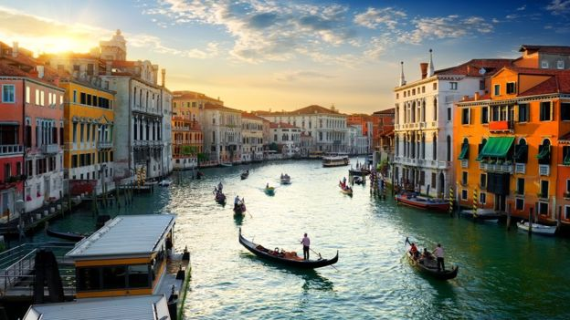
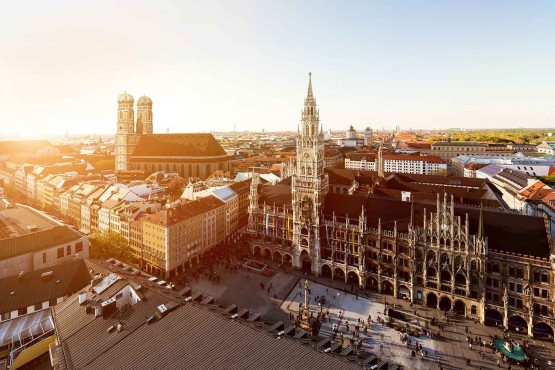

Samantha Barnes:
Traveling
My name is Sami and I love to travel! My top three favorite places I've been are New York, Venice, and Munich. I literally spend all my time trying to save money and plan trips to go back to each place. This is obviously extremely expensive but I can dream.

My favorite place on the planet, New York has a hundereds of different places to visit like time square, central park, the Rockefeller Center, etc. Some examples of fun activites in this amazing city are in the following link:
Things to do in New York!

My second favorite city is Venice. In Venice it is required that you ride in a Gondola down the Grand Canal, walk across the Rialto Bridge, and visit the beautiful Doge's Palace. There are so many more things to see in Venice that can be found in the following link:
Things to do in Venice!

Finally, my third favorite city is Munich. In Munich the most popular activities consist of visiting "the biggest folk festival in the world," Oktoberfest, listening to the clock in Marienplatz, and finding the "devil's footprint." The following link has more examples of things to see in Munich.
Things to do in Munich!
As I said these trips are rather pricey. Below, I have made a table that demonstrates an estimated guess how much each vacation will cost for 7 days given all the things I would want to do.
| Country | City | Price |
|---|---|---|
| United States | New York | $3,000 |
| Italy | Venice | $7,600 |
| Germany | Munich | $6,800 |
While I am pretending that I can afford to leave my house, let's pretend that I am ridiculously wealthy and can
afford to go on all 3 trips. We would be looking at an estimated grand total of:
| $17,400 |
|---|